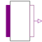

MIMOMultiple input - multiple output |

|
Information
This information is part of the Modelica Standard Library maintained by the Modelica Association.
MIMO is a partial model for the connection pattern with multiple (vector) digital input and multiple (vector) digital output. Besides the connectors it provides a rectangle for the icon which can be filled in by the component which inherits the MISO model.
Parameters (1)
| n |
Value: 1 Type: Integer Description: Number of inputs = Number of outputs |
|---|
Connectors (2)
| x |
Type: DigitalInput[n] Description: Connector of Digital input signal vector |
|
|---|---|---|
| y |
Type: DigitalOutput[n] Description: Connector of Digital output signal vector |